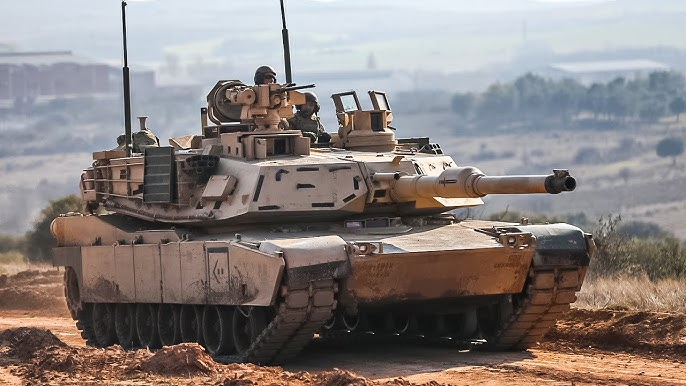
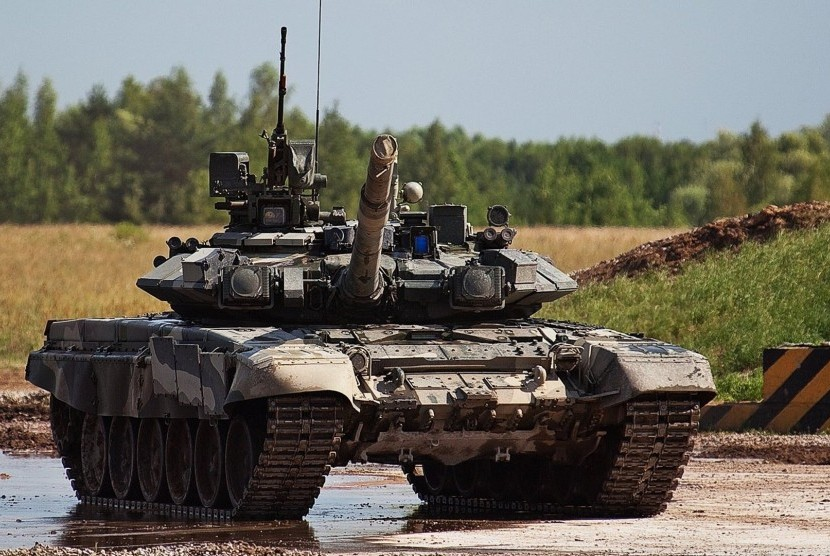
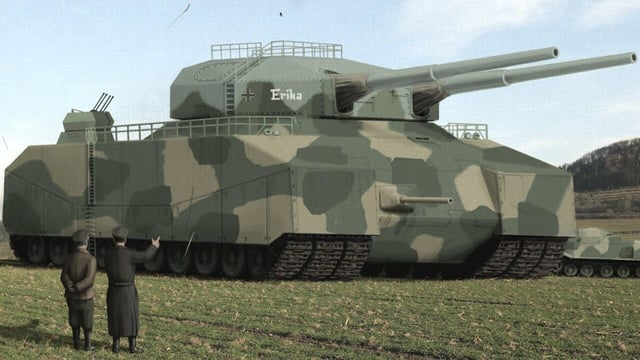

Koleksi tank Dunia
M1A1 Abrams

M1A1 Abrams adalah tank tempur utama (MBT) generasi ketiga Amerika Serikat yang diproduksi oleh General Dynamics, menonjol dengan meriam 120 mm M256, pelindung komposit Chobham/uranium terdeplesi, dan mesin turbin gas 1.500 hp. Mulai digunakan tahun 1986, tank ini dirancang untuk ketahanan tinggi, mobilitas, dan daya hancur, serta digunakan dalam berbagai konflik.
T-90

T-90 adalah tank tempur utama (MBT) generasi ketiga Rusia yang dikembangkan dari T-72, menggabungkan teknologi T-80U dengan mesin yang ditingkatkan dan perlindungan lapis baja reaktif Kontakt-5. Diproduksi oleh Uralvagonzavod, T-90 dilengkapi meriam 125mm, sistem Shtora-1, dan digunakan secara luas dalam konflik modern, dengan varian modernisasi T-90M "Proryv-3" sebagai salah satu yang tercanggih di AD Rusia.
Leopard 2

Leopard 2 adalah tank tempur utama (MBT) generasi ketiga Jerman .Dikembangkan oleh Krauss - Maffei pada tahun 1970-an, tank ini mulai beroperasi pada tahun 1979 dan menggantikan Leopard 1 sebelumnya sebagai tank tempur utama angkatan darat Jerman Barat . Berbagai iterasi Leopard 2 terus dioperasikan oleh angkatan bersenjata Jerman , serta 13 negara Eropa lainnya, dan beberapa negara non-Eropa, termasuk Kanada, Chili, Indonesia, dan Singapura. Beberapa negara yang mengope rasikannya telah memperoleh lisensi desain Leopard 2 untuk produksi lokal dan pengembangan dalam negeri.
Panzer VIII Maus

Panzerkampfwagen VIII Maus adalah tank super berat Jerman Nazi pada Perang Dunia II, yang dikenal sebagai kendaraan tempur berlapis baja terberat (188 ton) dan terbesar yang pernah dibuat. Dirancang oleh Ferdinand Porsche atas perintah Hitler, Maus bertujuan menjadi "benteng bergerak" dengan armor hingga 215 mm dan meriam utama 128 mm, namun hanya dua prototipe yang selesai. Karena bobotnya, tank ini sangat lambat dan gagal diproduksi massal.
P.1000 Ratte

Panzerkampfwagen P.1000 Ratte adalah desain tank super berat Jerman yang tidak pernah dibangun. Dirancang dengan berat sekitar 1.000 ton, kendaraan ini akan membawa meriam kapal perang dan perlindungan baja ekstrem. Proyek ini dibatalkan karena dianggap tidak praktis, tetapi tetap menjadi salah satu konsep kendaraan militer paling ekstrem dalam sejarah.